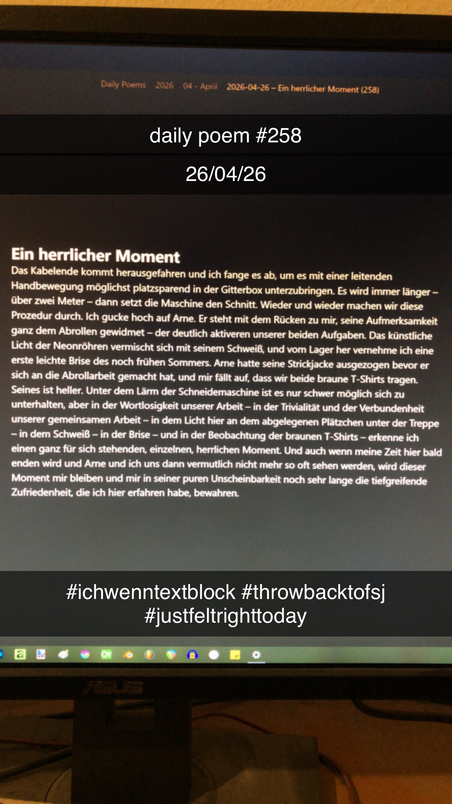

Ein herrlicher Moment
[258]Das Kabelende kommt herausgefahren und ich fange es ab, um es mit einer leitenden Handbewegung möglichst platzsparend in der Gitterbox unterzubringen. Es wird immer länger – über zwei Meter – dann setzt die Maschine den Schnitt. Wieder und wieder machen wir diese Prozedur durch. Ich gucke hoch auf Arne. Er steht mit dem Rücken zu mir, seine Aufmerksamkeit ganz dem Abrollen gewidmet – der deutlich aktiveren unserer beiden Aufgaben. Das künstliche Licht der Neonröhren vermischt sich mit seinem Schweiß, und vom Lager her vernehme ich eine erste leichte Brise des noch frühen Sommers. Arne hatte seine Strickjacke ausgezogen bevor er sich an die Abrollarbeit gemacht hat, und mir fällt auf, dass wir beide braune T-Shirts tragen. Seines ist heller. Unter dem Lärm der Schneidemaschine ist es nur schwer möglich sich zu unterhalten, aber in der Wortlosigkeit unserer Arbeit – in der Trivialität und der Verbundenheit unserer gemeinsamen Arbeit – in dem Licht hier an dem abgelegenen Plätzchen unter der Treppe – in dem Schweiß – in der Brise – und in der Beobachtung der braunen T-Shirts – erkenne ich einen ganz für sich stehenden, einzelnen, herrlichen Moment.

Anmerkungen
insane revision, i know
bisschen doof, das ich die history des poems natürlich trotzdem stehen lasse und den rest somit auch jeder lesen kann, aber honestly, ich weiß nicht mal mehr warum ich nach dem jetzigen ende überhaupt noch weitergeschrieben hab
die kürzere version ist doch punchy und die längere verwäscht das nur und machts noch sentimentaler als es ohnehin schon ist
shoutout arne